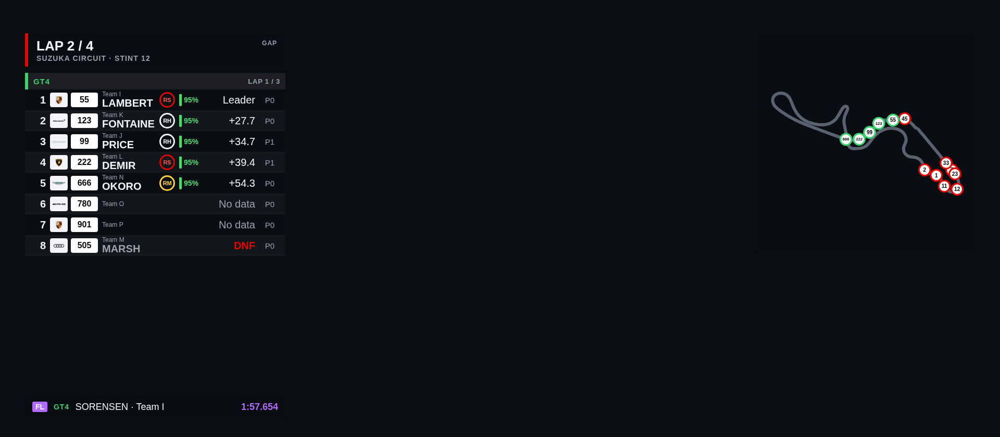

<!doctype html>
<html lang="en">
<head>
<meta charset="utf-8">
<meta name="viewport" content="width=device-width, initial-scale=1">
<link rel="icon" href="favicon.svg" type="image/svg+xml">
<link rel="apple-touch-icon" href="apple-touch-icon.png">
<title>Overlay Package Designer — Onboarding · GT Racing Broadcast</title>
<link rel="stylesheet" href="vendor/reveal/dist/reveal.css">
<link rel="stylesheet" href="vendor/reveal/plugin/highlight/monokai.css">
<link rel="stylesheet" href="assets/deck.css">
</head>
<body data-role="overlay-designer">
<div class="reveal"><div class="slides">

<section data-markdown><script type="text/template">
<span class="role-tag">Overlay Package Designer · Onboarding</span>
# Overlay Package Designer
Restyle the on-screen HUD, the break and split screens and the driver dashboard. Per league.
Visually, no CSS required.

Note: Welcome to the Overlay Package Designer onboarding. Your role is to restyle the on-screen graphics for each league: the H U D with the race timer and the POV frame, the intermission and splitscreen layouts, and the driver dashboard. The best part is that you can do all of this visually, with no CSS required.
</script></section>

<section data-markdown><script type="text/template">
## One shared page, per-league look
The relay serves the same `hud.html` for every league.
A profile ships a small CSS override in `profiles/<name>/overlay/` that
**wins the cascade**: no forking the page, no separate copy to maintain.

Go deeper:
[HUD Overlays](https://github.com/jegr78/gt-racing-broadcast/wiki/HUD-Overlays) ·
[League profiles](https://github.com/jegr78/gt-racing-broadcast/wiki/Profiles)

Note: The relay serves the same H U D page for every league. Each profile ships a small CSS override that wins the cascade, so it restyles the shared page without forking it. That means there is no separate copy to maintain, one page, but a per-league look.
</script></section>

<section data-markdown><script type="text/template">
### The visual Overlay Builder
Control Center → **Profile** → **Overlay Builder**: click a slot, drag to move,
drag the handles to resize, and set position, font, color and background in the
property panel (fields **pre-fill** with the real template values).


[HUD Overlays](https://github.com/jegr78/gt-racing-broadcast/wiki/HUD-Overlays) · [Control Center](https://github.com/jegr78/gt-racing-broadcast/wiki/Control-Center)

Note: This is the visual Overlay Builder. Open the Control Center, go to Profile, then Overlay Builder. From there you click a slot, drag it to move, and drag the handles to resize it. In the property panel you set position, font, color and background, and the fields pre-fill with the real template values, so you are always editing from a known starting point.
</script></section>

<section data-markdown><script type="text/template">
### Live preview with a running relay
**Save** writes the generated CSS to `profiles/<name>/overlay/`.
**Apply in OBS** reloads the browser source (same as `racecast obs refresh`).
**Preview ↗** opens the live `/hud/preview`. The real base page with live Sheet
data rendered over your `Overlay.png` frame.


[HUD Overlays](https://github.com/jegr78/gt-racing-broadcast/wiki/HUD-Overlays)

Note: With a running relay you get a live preview. Save writes the generated CSS into your profile's overlay folder. Apply in O B S reloads the browser source, the same as running the obs refresh command. And Preview opens the live H U D preview: the real base page, with live Sheet data rendered over your own Overlay image frame.
</script></section>

<section data-markdown><script type="text/template">
## One builder, four scenes
The **scene selector** in the builder header picks what you design:

- **HUD / Program**: the lower third, race timer and POV frame.
- **Intermission**: the break screen with chat and, in solo profiles, video frames.
- **Splitscreen** (Endurance): the two feeds side by side.
- **Driver dashboard**: the telemetry timing tower and track map.

Each scene has its own CSS and `layout-<page>.json`. Unsaved drafts survive a scene switch; **Save** writes only the selected scene.

[HUD Overlays](https://github.com/jegr78/gt-racing-broadcast/wiki/HUD-Overlays)

Note: The builder edits more than the H U D. The scene selector in its header picks the scene you design. H U D and Program is the lower third with the race timer and the POV frame. Intermission is the break screen with the broadcast chat, and in solo profiles the webcam and capture frames. Splitscreen, in endurance profiles, places the two feeds side by side. And Driver dashboard styles the telemetry timing tower and track map. Each scene keeps its own CSS and its own layout file. Switching scenes keeps your unsaved drafts in the browser session, and Save writes only the scene you have selected.
</script></section>

<section data-markdown><script type="text/template">
## Keep proportions, undo, starter layouts
- **Lock aspect ratio** links width and height. On by default for Webcam and Capture frames.
- **Aspect ratio** presets: 16:9, 4:3, 1:1 or a custom ratio. **Keep current ratio** locks the shape as it is.
- Hold **Shift** while dragging to switch the lock for that drag.
- **Undo** / **Redo** (Ctrl/Cmd-Z) cover every layout change.
- **Starter layout** (Intermission): Background + chat, Break + goals; solo adds Webcam + chat and Capture + webcam + chat.

[HUD Overlays: Keep proportions](https://github.com/jegr78/gt-racing-broadcast/wiki/HUD-Overlays#keep-proportions-while-resizing)

Note: A few tools keep the work quick. Lock aspect ratio links width and height, for the handles and the number fields. It starts on for webcam and capture frames. The aspect ratio presets repair a stretched frame with sixteen by nine, four by three, one by one, or a custom ratio, and Keep current ratio locks the shape as it is. Hold Shift while dragging to switch the lock for that one drag. Undo and Redo cover every layout change. On the Intermission scene, the Starter layout picker gives you a starting point: background with chat, or break with goals, and in solo profiles also webcam with chat, and capture with webcam and chat. A starter layout changes only positions and visibility, and Undo takes it back.
</script></section>

<section data-markdown><script type="text/template">
## Splitscreen


Move and resize **Feed A video** and **Feed B video**; style or hide each CURRENT/NEXT label. **Apply in OBS** updates only the A/B bounds and keeps the scene, feeds and audio.

[HUD Overlays: Splitscreen layouts](https://github.com/jegr78/gt-racing-broadcast/wiki/HUD-Overlays#splitscreen-layouts)

Note: In an endurance profile, the Splitscreen scene places Feed A and Feed B. Move and resize each video box with the mouse or by numbers. O B S fits each video inside its box and keeps its aspect ratio. Each feed has its own CURRENT or NEXT label, which you can style, offset or hide. Equal side by side and Large A with secondary B give you a starting point. Apply in O B S updates only the two video bounds and the browser sources. It keeps the current scene, the feeds and the audio as they are. An older scene collection needs an updated import first, and Apply says so when a source is missing.
</script></section>

<section data-markdown><script type="text/template">
## Intermission


Place, style or hide the broadcast chat over `Intermission.png`. Solo profiles add **Webcam** and **Capture** frames. **Apply in OBS** sets the saved positions and visibility; it never switches scenes or unmutes audio.

[HUD Overlays: Intermission layouts](https://github.com/jegr78/gt-racing-broadcast/wiki/HUD-Overlays#intermission-layouts)

Note: The Intermission scene places the public broadcast chat over the league's Intermission picture. Solo profiles also offer webcam and capture frames. The builder shows labelled placeholders and never opens the camera. Apply in O B S applies the saved positions and visibility and refreshes the browser source. It does not switch scenes and does not unmute any audio. During the show, the director can still show or hide parts of the break screen live, separately from your design.
</script></section>

<section data-markdown><script type="text/template">
## Driver dashboard


Place and style the lap header, the **timing tower**, the fastest lap row and the **track map** (`drivers.css`). The **Brand logos** switch on the timing tower hides the logo column; it is on by default.

[HUD Overlays: Driver dashboard](https://github.com/jegr78/gt-racing-broadcast/wiki/HUD-Overlays#driver-dashboard-layout) · [Driver telemetry](https://github.com/jegr78/gt-racing-broadcast/wiki/Driver-Telemetry#on-air-and-in-the-cockpit)

Note: When drivers send telemetry, the driver dashboard overlay shows a timing tower, the lap count, the fastest lap and a track map. Pick Driver dashboard in the scene selector to place and style its parts. It has its own CSS file. On the timing tower, the Brand logos switch hides the logo column, and the rows close up. It is on by default. The switch changes only the on-air overlay. The cockpit and the public timing page always show the logos. Whether the dashboard is on air is the director's choice, not part of the design.
</script></section>

<section data-markdown><script type="text/template">
## Team names that fit


Team names shrink between **Name max (px)** and **Name min (px)** (30 / 16) to fit the box, in any alignment. Other text boxes fit the same way when you set **Auto-fit max (px)** and **Auto-fit min (px)**.

[HUD Overlays](https://github.com/jegr78/gt-racing-broadcast/wiki/HUD-Overlays)

Note: Long team names shrink to fit their box, between a maximum and a minimum font size, thirty and sixteen pixels by default. That works with left, center and right alignment. Text that cannot fit at the minimum stays clipped. Any other single-line text box can fit the same way. Set Auto-fit max and Auto-fit min on the box in the builder. Without an Auto-fit max, a box keeps its fixed font size.
</script></section>

<section data-markdown><script type="text/template">
## Audience widgets


**Overlay Builder → Audience widgets**: a manual counter or goal, or YouTube and Twitch metrics. Style it as a number, number with target or progress bar. **Place in this scene** reuses a widget; **Delete shared widget** removes it everywhere.

[HUD Overlays: Audience counters and goals](https://github.com/jegr78/gt-racing-broadcast/wiki/HUD-Overlays#audience-counters-and-goals)

Note: Audience widgets put counters and goals on screen. Open Audience widgets in the Overlay Builder. A manual counter needs no platform account, for example a community challenge of eighteen out of twenty-four hours. Automatic sources read YouTube likes, viewers and subscribers, or Twitch viewers and paid subscriptions, once the platform is connected. Choose a number, a number with target, or a labelled progress bar, then style it like any slot. Place in this scene reuses a widget in another scene with its own design. Delete shared widget removes it from every scene. A new placement needs Save and Apply in O B S before it shows on air.
</script></section>

<section data-markdown><script type="text/template">
## Fonts
A curated set of broadcast-friendly Google Fonts **ships with every install**,
available in the Overlay Builder's font pickers with no download step.

Need a font that is not in the set? Type its name in
**General Settings → Overlay fonts**: it is self-hosted once into the machine-wide
library (`runtime/fonts/`), shared across all leagues.

When a league's design uses a font it is copied into `overlay/fonts/` on save, so
**`profile export` stays self-contained** and works offline.

[HUD Overlays](https://github.com/jegr78/gt-racing-broadcast/wiki/HUD-Overlays)

Note: A curated set of broadcast-friendly Google Fonts ships with every install, so they appear in the Overlay Builder's font pickers with no download step. If you need a font that is not in the set, type its name in General Settings, under Overlay fonts. It is self-hosted once into the machine-wide library and shared across all leagues. And when a league's design uses a font, it is copied into the profile's fonts folder on save, so a profile export stays self-contained and works offline.
</script></section>

<section data-markdown><script type="text/template">
## First-override caveat + advanced CSS
The relay only loads `--overlay-dir` when that directory **existed at startup**.
So the **very first** override on a profile whose `overlay/` did not yet exist
needs **one relay restart** (Control Center **Relay → Restart**) to activate.
After that, every later edit applies live via **Apply in OBS**. No restart.

The **advanced CSS** box is a raw escape hatch: whatever you type there is appended
verbatim after the generated rules. Pairs naturally with a per-league OBS collection
(`GT Racing Endurance — <league>`).

[HUD Overlays](https://github.com/jegr78/gt-racing-broadcast/wiki/HUD-Overlays) ·
[League profiles](https://github.com/jegr78/gt-racing-broadcast/wiki/Profiles)

Note: One important caveat about the first override. The relay only loads the overlay directory if it existed at startup, so the very first override on a profile that had no overlay folder yet needs one relay restart to activate. Use Relay, then Restart, in the Control Center. After that, every later edit applies live through Apply in O B S, with no restart. There is also an advanced CSS box, a raw escape hatch where whatever you type is appended verbatim after the generated rules, and it pairs naturally with a per-league O B S collection.
</script></section>

<section data-markdown><script type="text/template">
## Recap / go deeper
1. Pick the scene. Drag the slots, resize, set colors. **Save**.
2. **Apply in OBS** to reload the browser source (and the video bounds).
3. **Preview ↗** to confirm it looks right against your `Overlay.png`.
4. Ship it: Control Center **Profile → Export** keeps fonts + CSS self-contained.

Go deeper:
[HUD Overlays](https://github.com/jegr78/gt-racing-broadcast/wiki/HUD-Overlays) ·
[Control Center](https://github.com/jegr78/gt-racing-broadcast/wiki/Control-Center) ·
[League profiles](https://github.com/jegr78/gt-racing-broadcast/wiki/Profiles)

Note: To recap the workflow. Pick the scene, drag the slots, resize them, set your colors, and Save. Use Apply in O B S to reload the browser source, and for Splitscreen and Intermission the video positions too. Use Preview to confirm it looks right against your Overlay image. And when you are happy, ship it. Control Center, Profile, Export keeps the fonts and CSS self-contained.
</script></section>

</div></div>
<script src="vendor/reveal/dist/reveal.js"></script>
<script src="vendor/reveal/plugin/markdown/markdown.js"></script>
<script src="vendor/reveal/plugin/highlight/highlight.js"></script>
<script src="vendor/reveal/plugin/notes/notes.js"></script>
<script src="assets/deck.js"></script>
</body>
</html>
